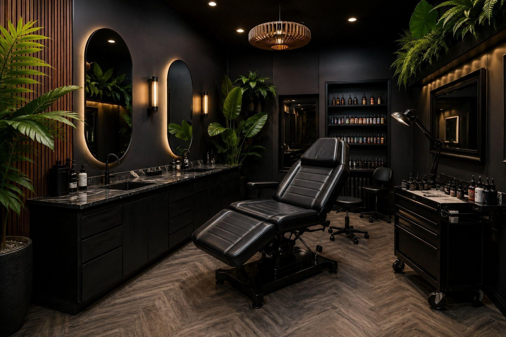

Espaço 01 — Expressão
Um ambiente pensado para valorizar a arte da tatuagem em cada detalhe. A combinação de elementos industriais, mobiliário contemporâneo e personalidade visual cria um espaço que inspira criatividade e expressão individual.
